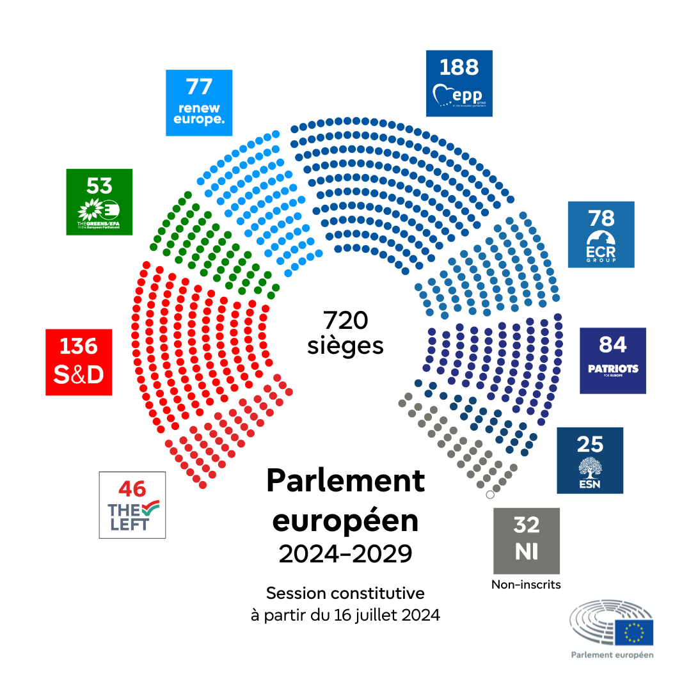

Fondamentaux du droit de l’UE - Cours INSP
1 Les grandes étapes de la construction européenne
Les grands étapes de la construction européenne :
Les prémices entre les deux geurres (projet Briand 5 septembre 1929)
Installation de la guerre froide (coup de Prague 1948; Blocus de Berlin 1948) : contexte très tendu, monde bipolaire.
Le congrès de la Haye (1948) et la mise en place des organisations de coopérations régionales européennes => Première tentative de coopération dans le domaine militaire pour répondre au triple objettif de reconstruction de sécurité pour apporter une paix globale et géostratégique. (0ECE 1948; Europe occidentale 1948; Conseil de l’Europe 1949=> volonté de coopérer dans le domaine de la culture, coopération de droit)
Conseil de l’Europe qui n’a rien à voir avec l’Europe : a son propre juge. Cours Européenne des droits de l’homme. Le siège est à Strasbourg. La cour est à Strabourg.
La déclaration Schuman (9 mai 1950) : parti pris d’annoncer sur des points limités mais de façon décisive “Ne soyons pas ambitieux”. Il faut faire l’Europe de façon progressive => Charbon et Acier
On met la production et la gestion du charbon et acier de l’Allemangne et de la France gérée par une autorité commune.
6 Etats qui signent ceci : CECA 18 avril 1951
CED 1952-1954 : idée que si on crée une armée, autant en faire une avec l’Allemagne dedans, qui permettrait de mieux la contrôler. C’est signé par 5 Etats. L’assemblée Nationale refuse de ratifier donc échec.
Staline meurt en 1953, fin de la Guerre de Corée, crise du Canal de Suez : chars à Budapest. Ce qui inquiète la partie Occidentale. On décide de penser à l’énergie : Communauté Européenne de l’Energie Atomique (CEEA) le 25 mars 1957
Alternances de crise politiques et/ou économiques (crise de la chaise vide 1965, relations UK-UE ; chocs pétroliers 1973 et 1979 ; crise du chèque britannique 1984 : MArgaret Tatcher trouve que la contribution de l’UK à l’Europe est trop importante vis-à-vis de ce que ça lui rapporte “I want my money back” ; crises institutionnelles ; crises financières et sanitaires ; Brexit)
Les anglais ont fait leur propre zone d’échange avec le Commonwealth donc en Europe on fait pareil avec … . Général de Gaulle en 1958, très hostile à l’adhésion à l’Union Européenne et à ce que le Royaume Uni la rejoigne. La France a posé son veto deux fois.
Crise de la chaise vide : La France ne peut pas voter pour la PAC car absence de Charles de Gaulle.
FSE, accords de coopérationAvec néanmoins des avancées (mise en place des premières politiques communes ; sommet de la Haye 1969 ; serpent monétaire sommet de Paris 1974 ;
qui ont permis l’aboutissement de dossiers structurants
1997 : traité d’Amsterdam : grand élargissement historique. Il faut aussi modifier les traités car à 6 c’est OK mais pas vraiment à plus. Ca va pas être suffisant donc Traité de Nice 2001. On repense à une nouvelle révision des traités. Traité de lisbonne en 2009.
2 tendances fortes :
on va vers un fonctionnement de plus en plus démocratique : on donne de plus en plus de pouvoir au conseil et au Parlement.
on donne plus de compétences à l’UE.
- un triple objectif qui reste d’actualité : il faut trouver une façon de faire de maintenir la paix sur le continent. Aussi, au début, un objectif de reconstruction après la Seconde Guerre Mondiale.
- On est sur une UE qui s’est construite sur le droit qui établit une liste de compétences : tout un système contruit de façon spécifique (jurisprudence) cours européenne. Cadre général qui est le droit international et on crée aussi un cadre général pour l’UE
2 La structure juridique de l’UE
2.1 Différences cas de figure :
L’action des Etats s’inscrit dans le cadre des traités (Ex.: politique environnementale ; PAC)
L’action des Etats s’inscrit dans le cadre des traités mais seuls quelques Etats souhaitent y participer (coopérations renforcées)
L’action des Etats s’inscrit dans le cadre des traités mais certains Etats négocient une exemption (option out : UEM ; PSDC ; JAI ; Charte des droits fondamentaux…)
L’action des Etats ne s’inscrit pas dans le cadre des traités mais pourrait y être intégrée à terme (Schengen)
L’action des Etats relève de simples coopérations intergouvernementales et ne s’inscrit pas dans les traités (Processus de Bologne) LMD => négocié en dehors des traités, avec des pays en dehors de l’UE. Mais qui porte sur des sujets de compétence de l’UE.
L’action des Etats relève de simples coopérations bilatérales (traité de l’Elysée)
3 Le système de répartition des compétences
Comment on sait si c’est l’UE ou les Etats membres qui sont compétents sur des sujets ?
Pour une politique publique par exemple, en éducation, justice.. qui est compétent ? C’est l’Etat: c’est lui qui s’engage.
A partir de quel moment c’est l’UE qui devient compétente ? A partir du moment où les Etats membres lui attribuent la compétence : c’est le principe d’attribution.
Comment ils attribuent la compétence ? L’UE reçoit ces compétences en fonction de la ratification des traités.
Principe de subsidiarité : acte législatif de l’UE. IL faut que la Commission européenne justifie la base juridique. Et elle n’intervient que dans la limite de l’objectif visé.
On dégage un effort en proportion de l’objectif recherché : c’est le principe de proportionnalité.
On considère qu’il y a trois types de compétences données à l’UE :
Est-ce que c’est une compétence exclusive ? Si chaque Etat membre peut discuter tout seul son droit de douane avec la Chine, il n’y a plus de compétence exclusive. Pareil pour les règles de commandes publiques, aider ses entreprises.
Les compétences partagées : à la fois l’UE et les Etats membres. Tant que l’UE n’a pas légiféré sur un secteur. Il s’agit du principe de préemption.
Les compétences d’appui : typiquement le cas en matière culturelle ou d’éducation. Qui décide de la durée des études ? Des diplômes qu’il faut avoir pour devenir professeur ? Pas de directive européenne : ce sont les Etats membres qui les fixent. Mais on va essayer de favoriser des échanges entre les professeurs européens. On met un programme qui permet la mobilité.
| Type de compétence | Qui décide ? | Exemples |
|---|---|---|
| Compétence exclusive | Seule l’UE peut légiférer et les États ne peuvent pas intervenir | Politique commerciale (ex : accords douaniers avec la Chine), règles de concurrence, gestion de l’euro |
| Compétence partagée | L’UE et les États peuvent agir, mais si l’UE légifère, les États ne peuvent plus intervenir (principe de préemption) | Environnement, transport, énergie, agriculture |
| Compétence d’appui | L’UE ne fait que compléter les actions des États, sans imposer de règles contraignantes | Éducation, culture, tourisme, santé publique |
Les politiques publiques de l’UE doivent être mise en oeuvre par les Etats membres. Par exemple pour la pollution de l’air : ce sont aux Etats membres de mettre des mesures pour encourager le recours à des chauffages domestique (par exemple) peu producteurs de particules fines. Quelles sont les administrations qui vont faire des contrôles ou vont aider => les Etats membres.
autonomie procédure et exécutaire des États membres : Les États membres sont responsables de la mise en œuvre des politiques de l’UE dans leur ordre juridique national. Ils disposent ainsi d’une autonomie pour définir leurs procédures, leurs tribunaux compétents et leurs modalités d’exécution. Toutefois, ils doivent garantir que ces procédures permettent d’appliquer réellement le droit de l’UE : c’est le **principe d’effectivité**.
Principe d’équivalence : Les recours et règles procédurales servant à faire respecter le droit européen ne doivent pas être moins favorables que ceux employés pour le droit national. Autrement dit, on ne peut pas exiger des conditions plus strictes pour mettre en œuvre une règle de l’UE que pour une règle nationale équivalente.
Principe de primauté : en respectant le droit européen : En cas de conflit entre une norme nationale et le droit de l’Union européenne, c’est le droit de l’UE qui prévaut. Les juridictions nationales doivent donc écarter l’application d’une loi nationale contraire au droit de l’UE.
Principe de coopération loyale : Les institutions de l’UE et les États membres se doivent un respect et un soutien mutuel. Les États doivent par exemple mettre tout en œuvre pour appliquer et faire respecter le droit européen, tandis que l’UE doit tenir compte des spécificités des États membres dans ses actions.
Principe d’administration indirecte : Même si l’UE adopte une réglementation ou une directive, ce sont les administrations nationales qui sont chargées de son exécution. On dit que l’Union administre “indirectement” car elle ne possède pas, la plupart du temps, d’administration propre pour mettre en œuvre ses règles : ce sont donc les fonctionnaires, juridictions et administrations de chaque État membre qui appliquent concrètement le droit de l’UE.
La ratification d’un traité européen se fait par référendum ou par voie parlementaire.
Référendum : traité de Maastricht et traité de Lisbonne
Au conseil est-ce qu’on vote à la majorité ou ..
4 Les institution de l’Union européenne (art 13 TUE)
| Institution | Fonction | Composition | Mission | Rôle | Siège |
|---|---|---|---|---|---|
| Conseil européen | Impulser les grandes orientations politiques et budgétaires de l’UE | Président du Conseil européen, 27 chefs d’État ou de gouvernement, Président de la Commission européenne | Les chefs d’État et de gouvernement définissent les priorités et le programme d’action dans les domaines de compétence de l’UE | Fixer les orientations et priorités politiques générales de l’UE | Bruxelles |
| Commission européenne | Proposer le budget, proposer les lois (directives, règlements, décisions) et exécuter les politiques européennes | 27 commissaires européens (un par État membre, dont le président), chacun en charge d’un domaine d’activité | Agir en faveur de l’intérêt général de l’UE, veiller au respect des traités et à l’application des décisions prises | Gardienne des traités et moteur de l’initiative législative de l’UE | Bruxelles |
| Conseil de l’UE | Adopter le budget de l’UE et voter les textes législatifs, en codécision avec le Parlement européen | Ministres des 27 États membres réunis par domaine d’activité (environnement, économie, commerce, agriculture…) | Représenter les États membres dans chaque domaine d’activité et coordonner les politiques européennes | Organe décisionnel clé représentant les gouvernements des États membres | Bruxelles |
| Parlement européen | Adopter le budget de l’UE et voter les textes législatifs, en codécision avec le Conseil de l’UE, et contrôler la Commission | 720 députés européens (mandature 2024-2029) répartis en groupes politiques | Élu au suffrage universel direct, le Parlement européen représente les citoyens européens | Organe législatif représentant directement les citoyens de l’UE | Strasbourg |
| Cour de justice de l’UE | Non spécifiée explicitement | 27 juges, un par État membre | Assurer l’application correcte de la législation européenne | Interprète la législation européenne et veille à sa bonne application | Luxembourg |
| Banque centrale européenne | Gérer la monnaie unique et mener la politique monétaire de la zone euro | Le directoire (six membres) et les gouverneurs des banques centrales des pays de la zone euro | Assurer la stabilité des prix et la gestion de l’euro | Garantir la stabilité monétaire et superviser l’utilisation de l’euro | Francfort |
| Cour des comptes européenne | Non spécifiée explicitement | 27 membres, un par État membre | Veiller à la bonne gestion du budget de l’Union européenne | Garantir l’utilisation transparente et appropriée des ressources de l’UE | Luxembourg |
5 Les autres organes de l’UE qui ne sont pas des institutions (au sens du traité)
| Organe | Fonction |
|---|---|
| Service européen pour l’action extérieure (SEAE) | Service diplomatique de l’UE, il aide le haut représentant pour les affaires étrangères à mettre en œuvre la politique étrangère et de sécurité commune. Il assure la cohérence et la coordination de l’action extérieure de l’UE et gère un réseau de délégations dans le monde entier. |
| Comité économique et social européen (CESE) | Représente la société civile européenne, incluant employeurs, travailleurs et autres organisations. Il est consulté par les institutions de l’UE sur des questions de politique relevant de sa compétence. |
| Comité européen des régions (CdR) | Représente les collectivités régionales et locales et est consulté sur les questions importantes pour ces dernières. |
| Banque européenne d’investissement (BEI) | Institution financière de l’UE qui finance des projets liés au climat, à l’environnement, au développement, à l’innovation, aux PME et aux infrastructures. |
| Médiateur européen | Organe indépendant qui enquête sur les cas de mauvaise administration des institutions de l’UE et aide les citoyens, entreprises et organisations rencontrant des problèmes avec ces dernières. |
| Contrôleur européen de la protection des données (CEPD) | Veille à ce que les institutions de l’UE respectent les droits des citoyens à la vie privée lors du traitement de leurs données personnelles. |
| Comité européen de la protection des données (CEPD) | Organe indépendant qui veille à l’application cohérente des règles de protection des données à travers l’UE et encourage la coopération entre les autorités nationales de protection des données. |
| Parquet européen | Parquet indépendant de l’UE chargé de rechercher, poursuivre et traduire en justice les auteurs d’infractions portant atteinte aux intérêts financiers de l’UE. |
| Centre de compétences européen en matière de cybersécurité (ECCC) | Soutient l’innovation et la politique industrielle dans le domaine de la cybersécurité, en collaboration avec les centres nationaux de coordination. Contribue à renforcer l’autonomie stratégique et la compétitivité mondiale du secteur de la cybersécurité de l’UE. |
6 Les services interinstitutionnels
| Service interinstitutionnel | Fonction |
|---|---|
| CERT-UE | Centre de réponse aux incidents de cybersécurité de l’Union européenne, chargé de protéger les institutions de l’UE contre les cyberattaques et d’assurer une coordination en cas d’incident. |
| École européenne d’administration (EEA) | Fournit des formations et des programmes de développement pour le personnel des institutions européennes afin d’améliorer leurs compétences professionnelles. |
| Office européen de sélection du personnel (EPSO) | Organise les concours et procédures de recrutement pour les institutions et agences de l’UE, garantissant une sélection transparente et efficace des fonctionnaires européens. |
| Office des publications de l’UE | Fournit des services d’édition aux institutions de l’UE et gère la publication du Journal officiel de l’Union européenne ainsi que d’autres documents officiels. |
7 Agences
Exemples : Autorité européenne des marchés financiers (ESMA) Agence exécutive européenne pour l’éducation et la culture (EACEA) Centre de traduction des organes de l’UE (CdT) CEPOL
8 Budget de l’UE (peut-être)
9 Ordre des décisions de l’UE :
1️⃣ Le Conseil européen – 📌 Fixe les grandes orientations
- Rôle : Il définit les grandes priorités et orientations politiques de l’UE.
- Composition : Les 27 chefs d’État ou de gouvernement, le président du Conseil européen et le président de la Commission européenne.
- Pouvoirs : Il ne légifère pas directement mais donne l’impulsion stratégique aux autres institutions.
2️⃣ La Commission européenne – 🏗️ Propose les actes législatifs
- Rôle : C’est l’organe exécutif et moteur législatif de l’UE.
- Composition : 27 commissaires européens, un par État membre, dirigés par un président.
- Pouvoirs :
- Monopole de l’initiative législative (elle seule peut proposer des directives, règlements et décisions).
- Exécution des politiques et du budget de l’UE.
- Gardienne des traités, elle veille au respect des lois européennes.
3️⃣ Le Parlement européen – 🏛️ Co-décide et représente les citoyens
- Rôle : Il est l’organe législatif représentant les citoyens de l’UE.
- Composition : 720 députés européens (mandature 2024-2029), élus au suffrage universel direct.
- Pouvoirs :
- Vote et amende les propositions de lois avec le Conseil de l’UE.
- Adopte le budget de l’UE.
- Contrôle démocratique sur la Commission européenne.
4️⃣ Le Conseil de l’Union européenne – 🤝 Co-décide et représente les États membres
- Rôle : Il représente les gouvernements des États membres et négocie les lois européennes avec le Parlement.
- Composition : Les ministres des 27 États membres, réunis par domaine d’activité (économie, environnement, agriculture…).
- Pouvoirs :
- Vote et modifie les propositions législatives conjointement avec le Parlement.
- Coordonne les politiques nationales en matière économique, sociale et de défense.
- Adopte le budget en collaboration avec le Parlement européen.
📌 À retenir :
✔️ Le Conseil européen fixe les grandes orientations.
✔️ La Commission européenne propose les lois.
✔️ Le Parlement européen et le Conseil de l’UE adoptent les lois en codécision.
✔️ La procédure législative est un processus de négociation et d’équilibre entre les institutions.
Il y a ce qu’on appelle un trilogue qui fait que quasi toutes les décisions sont prise en première lecture.
Parlement européen depuis 1979 =>députés européens élus par suffrage universisel direct
Première femme élue => Simone Veil
on siège par groupe politique :
